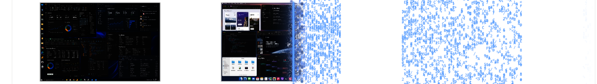
Know what to automate first.
And which processes to start with.
Reports and a prioritized automation plan — which processes to start with, what could change, and the evidence behind the decision.
Know what to automate first, and why.
Choose a process on evidence, estimated capacity, effort and human decisions.
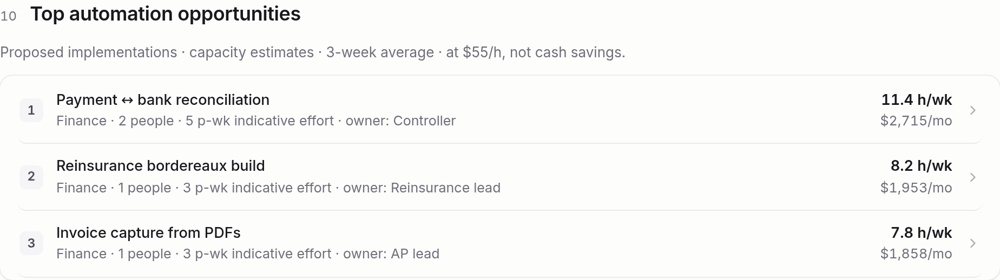
Start with work your team recognizes.
Familiar starting points — you choose the first process.
Understand where the time goes.
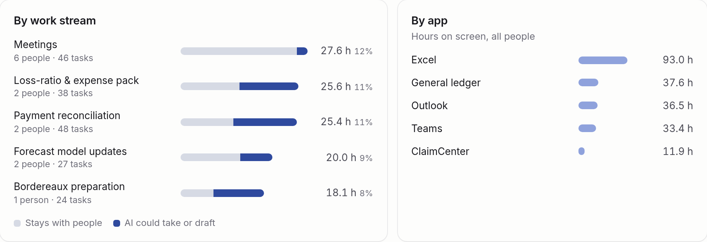
The app tells you where work happens. The work stream tells you what happens.
Separate recurring work from a busy week.
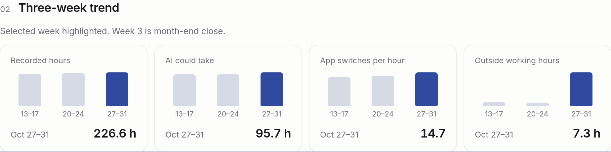
Month-end increases reconciliation and reporting work.
Validate the recurring pattern before making it the baseline.
Find repeated effort and delayed handoffs.
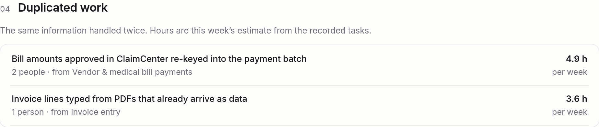
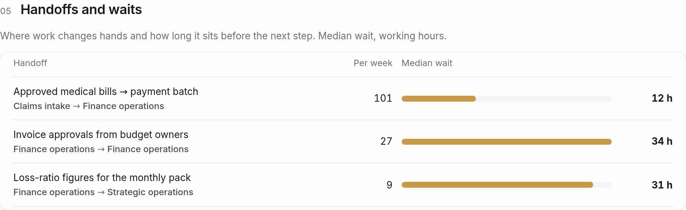
Hands-on effort ≠ elapsed waiting time.
See the process across systems and teams.
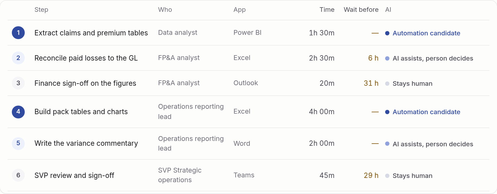
Automation candidates, assisted steps and human decisions stay distinct.
Estimate the opportunity.
Make the assumptions visible.
At $55/h × 4.33 weeks: about $2,715/month in modeled capacity.
Not cash savings or full ROI. Validate task boundaries, overlap, quality and implementation costs.
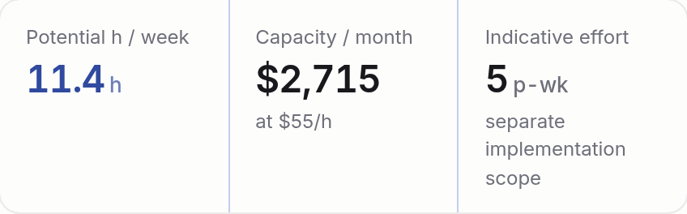
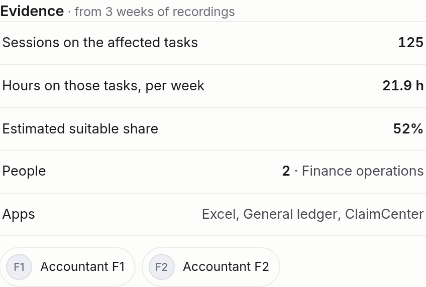
Estimates, not measured savings
Reports built around your questions.
Adapt views by department, workflow or the teams involved.
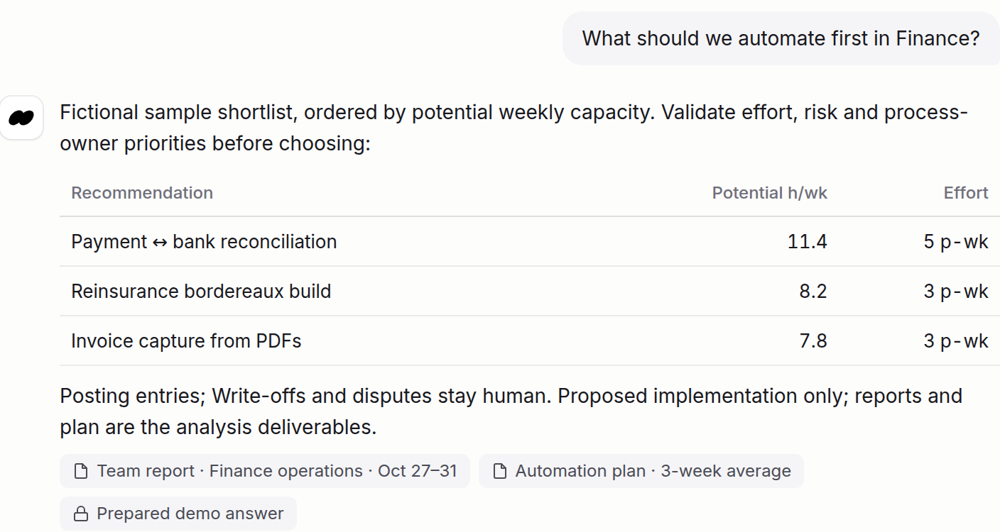
Prepared answers · no LLM calls
Agree who sees what before rollout.
Agree access to reports and underlying data separately.
One small recorder.
Work across your applications.

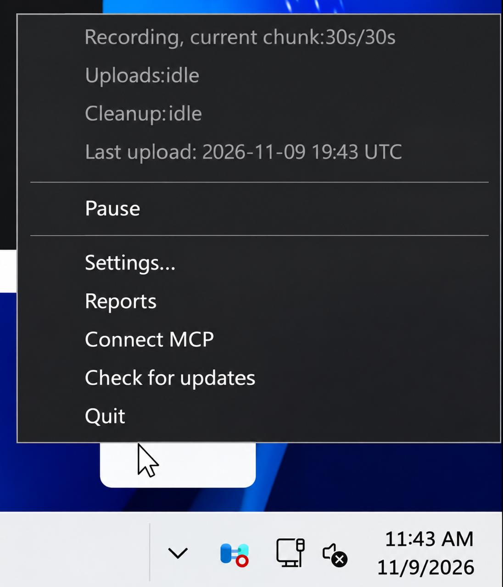
One icon in the tray.
Actual Windows build · sample workbook
From recorded work to an automation plan.
For regulated teams:
deploy in your environment.
- Deployment package, instructions and acceptance checks with your IT team.
- Agree storage, redaction, inference, retention and support access before recording.
- Strict no-egress requires a local model path too. A customer-approved external provider is a different data route.
Raw captures reach Silow servers. Redaction happens there before workflow analysis.
Data path, retention and terms require a separate review.
Already deployed for work involving medical records.
One organization, with an existing deployment for work involving sensitive information, including medical records.
reviewed for your rollout.
An existing deployment is not a blanket compliance guarantee.
Choose a team.
Get a baseline and an automation plan.
You choose the team and participants.
Start after deployment, recording scope and access are agreed.